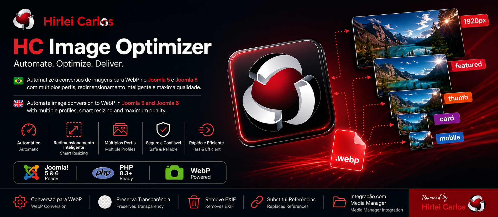
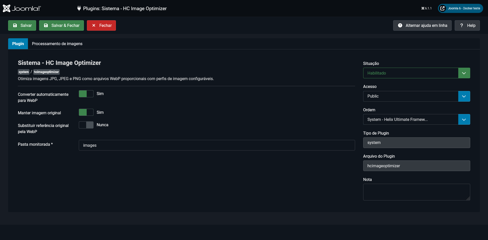
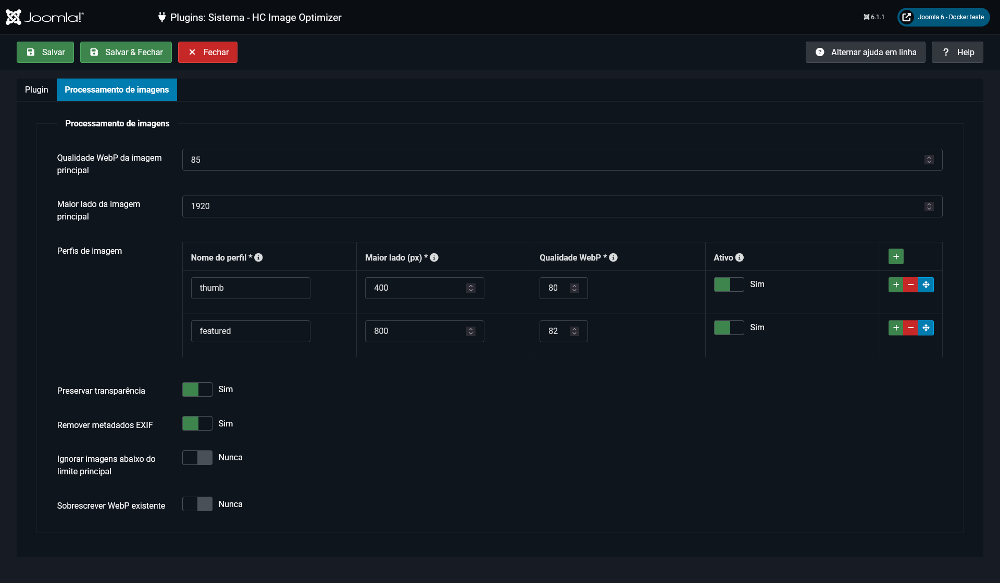
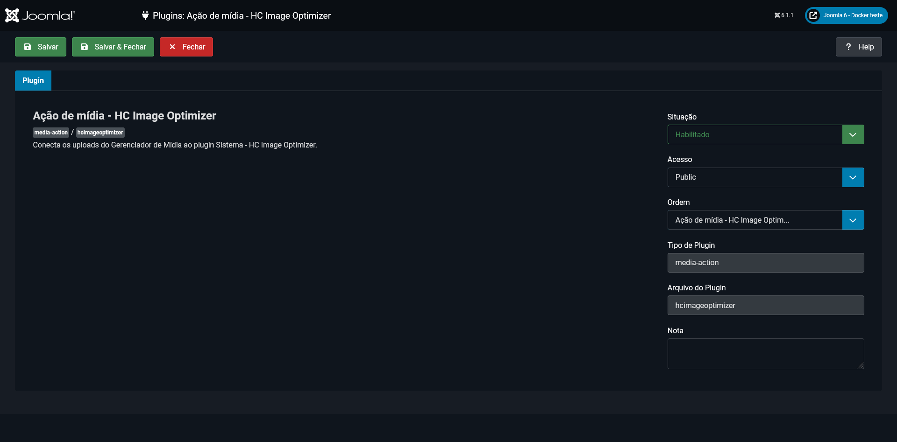

Problema
Imagens pesadas no fluxo do site
O pacote reduz a necessidade de otimização manual antes do upload e mantém o processamento dentro do ambiente Joomla.
Pacote Joomla · Open Source · JED
WebP automático para Joomla 5 e Joomla 6

Visão geral
O HC Image Optimizer é um pacote formado por dois plugins. O plugin de sistema executa validação, redimensionamento, conversão e geração de perfis. O plugin Media Action integra o processamento aos uploads do Gerenciador de Mídia. A versão 1.2.2 processa tudo localmente com a extensão GD do PHP.
Seções da página
Problema e uso
Problema
O pacote reduz a necessidade de otimização manual antes do upload e mantém o processamento dentro do ambiente Joomla.
Público
Voltado a portais, sites institucionais, projetos editoriais e equipes que enviam imagens pelo Gerenciador de Mídia.
Casos de uso
Útil para transformar uma imagem de origem em WebP principal e variantes proporcionais para diferentes espaços do layout.
Recursos reais
Conversão
Converte JPG, JPEG e PNG para WebP durante uploads e fluxos compatíveis de salvamento.
Dimensões
Limita o maior lado sem cortar, deformar ou ampliar imagens que já estão dentro do limite.
Variantes
Cria imagem principal e perfis independentes, como thumb, featured e card.
PNG
Mantém o canal alfa durante o processamento de imagens PNG transparentes.
Arquivos
Permite manter a imagem de origem e controlar a substituição de referências locais.
Segurança
Compara extensão e MIME real, normaliza nomes e restringe o processamento à pasta monitorada.
Integração
O plugin observa eventos de com_media.file e integra o processamento aos uploads.
Serviços
Processamento, resize, conversão, perfis, nomes, caminhos e referências ficam em serviços próprios.
Processamento
A versão 1.2.2 não depende de serviço externo para gerar os arquivos WebP.
Capturas reais
As capturas mostram telas reais do produto no administrator, incluindo configuração geral, perfis de imagem e integração com o Gerenciador de Mídia.



Arquitetura
Base técnica
Serviços
Instalação
Use o ZIP da release oficial 1.2.2.
No Joomla, acesse Sistema, Instalar e Extensões.
Habilite os plugins System e Media Action instalados pelo pacote.
Defina pasta monitorada, qualidade, maior lado, original e perfis adicionais.
Requisitos: Joomla 5.x ou 6.x, PHP 8.3+, GD com suporte a JPEG, PNG e WebP, e permissão de leitura e escrita na pasta monitorada.
Releases
Fonte: release e pacote instalável publicados no GitHub.
Artigo relacionado
Status editorial
Quando o artigo do HC Image Optimizer for publicado no LinkedIn ou na newsletter Dev & Versos, este bloco receberá a capa, o resumo e o link oficial.
Ver artigos publicadosConsulte o código, a página no diretório oficial, a release instalável e o HUB principal de produtos Joomla.